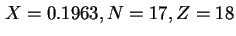

Next: การวิเคราะห์คอขวด (Bottleneck Analysis)
Up: กฎเวลาตอบสนองที่มีการปฏิสัมพันธ์กับผู้ใช้งาน (Interactive Response Time
Previous: กฎเวลาตอบสนองที่มีการปฏิสัมพันธ์กับผู้ใช้งาน (Interactive Response Time
Contents
Index
จากตัวอย่างที่ผ่านมาเราสามารถหาค่าเวลาตอบสนองที่มีการปฏิสัมพันธ์กับผู้ใช้งาน เท่ากับ

ดังนั้น
ซึ่งมีค่าเท่ากับค่าที่ได้ในตัวอย่างก่อนหน้า
Vara Varavithya
2002-03-09